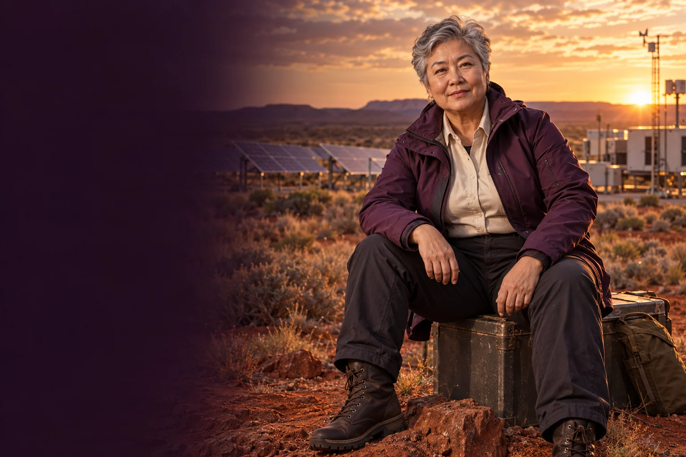

Describe demand
Map when energy is used, which services are essential and what records are available.

Follow the connections. Choose your direction.
Ember connects energy enterprise with the daily work of keeping people and services supplied. She helps founders compare technologies, design a limited trial and plan for interruptions, maintenance and changing local conditions.
Steady, resourceful and economical with words. She wants a system people can rely on.
Ember Queen · fictional AI mentor characterEnergy, hazard resilience and local infrastructure.
Ember begins with the load or service to be supported. How much is needed, when is it needed and what happens if it stops? This makes an energy proposal more useful than a list of impressive equipment. She asks teams to distinguish routine operation from emergency assumptions.
Resilience includes people, communication and maintenance. A backup installation is only useful if someone knows its condition and can operate it when needed. Ember helps founders think through handovers, test schedules and service responsibilities as part of the business model.
Map when energy is used, which services are essential and what records are available.
Prepare questions about installation, performance, maintenance and whole-of-service costs.
Walk through a defined failure scenario and identify the people, information and equipment needed to respond.
A community facility wants to explore energy backup and does not yet have a clear service requirement.
Choose the essential loads and the interruption being considered.
Gather actual usage records and existing equipment information.
Compare proposed options with a qualified installer or engineer.
Set out maintenance, testing, responsibilities and the limits of the proposed backup.
A service requirement and a comparison brief ready for professional costing.
The facility operator and qualified energy specialists review the proposed arrangement.
A written preparation guide for your own use with a human mentor or AI assistant.
Ask what the women involved want and need from this environment or system. Bring the Queen's perspective to that conversation, with women from the relevant places, backgrounds and ways of living shaping the answers.
Explore the central equality question →These are proposed learning connections. Choose a brief, follow its evidence questions and bring the people affected into the work.
Help cold stores keep food traceable, accessible and moving through the right temperature conditions.
Practical pilot
Turn off-world resource ambitions into material-handling experiments with clear terrestrial value.
Research frontier
Find a coastal energy use that might justify careful testing of tidal or wave technology.
Engineering development
Test whether a solar desalination concept can produce useful water with a manageable maintenance burden.
Engineering development
Convert a fusion-energy ambition into a precise research question and an independently reviewable experiment.
Research frontier
Assess pumped water storage as one option for matching energy supply with the times people need it.
Engineering development


The Queen's name and broad council strand come from the original 500 Queens material and the September 2026 planning document. This detailed personality, working method, sample session and visual representation are new proposed character development for community review. They do not describe a real person or a currently operating mentoring service.